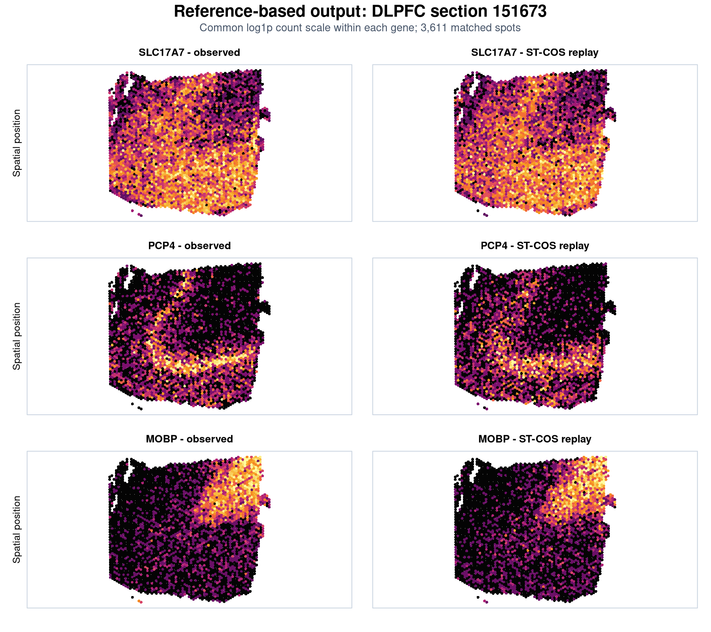

Reference-based mode estimates simulation parameters from an observed spatial transcriptomics dataset. The current release treats the reference as one global spot-level profile (CT) and does not infer separate cell-type-specific dependence matrices.
The worked output below uses human dorsolateral prefrontal cortex (DLPFC) section 151673. The reference and simulation contain the same 3,611 annotated spots; ST-COS estimates the negative-binomial marginals, spatial mean fields, and global latent dependence structure from the observed section before generating a new realization.
expr must contain genes in rows and spots in columns. spatial_coord must contain the same spots in the same order, with columns named row and col.
stopifnot(
is.matrix(expr),
ncol(expr) == nrow(spatial_coord),
all(c("row", "col") %in% colnames(spatial_coord)),
all(is.finite(expr)),
all(expr >= 0)
)
gene_names <- rownames(expr)
spot_names <- colnames(expr)
rownames(spatial_coord) <- spot_namesUse raw non-negative counts. Do not supply log-normalized expression to the negative-binomial fitting step.
library(STCOS)
fitted <- get_real_param(
expr = expr,
coord = spatial_coord,
gene_names = rownames(expr),
moran_thr = 0.15,
cor_thr = 0.05,
block_size = 1024,
n_cores = 4,
eigen_floor = 1e-6,
neighbor_k = 6,
spline_k = 50,
dispersion_cap = 1e6
)
names(fitted)
# mean_param, theta_g, gene_relationship, cov_gene,
# matrix_diagnosticsThe fitted objects can be inspected before simulation:
dim(fitted$mean_param$CT) # spots x genes
length(fitted$theta_g$CT) # one NB size per gene
dim(fitted$cov_gene[, , "CT"]) # genes x genes
fitted$matrix_diagnosticsMatrix-repair diagnostics include the minimum eigenvalues before and after repair, minimum lift, number of modified eigenvalues, relative Frobenius perturbation, and maximum entry-wise change.
set.seed(11)
replay <- generate_true_count(
coord = spatial_coord,
mean_param = fitted$mean_param,
gene_relationship = fitted$gene_relationship,
cov_gene = fitted$cov_gene,
theta_g = fitted$theta_g,
eigen_floor = 1e-6
)
simulated_counts <- replay$CT # spots x genesThis output is a newly generated realization from the fitted marginal, spatial, and latent dependence parameters. It is not a resampled copy of the observed count matrix.
The panels use a common color range within each gene and compare the observed section with one fitted ST-COS replay. SLC17A7 and PCP4 show cortical expression patterns, while MOBP marks white matter.

The plotted output was generated from the same matched spot identifiers used for model fitting. A complete analysis can use the full retained gene panel; the three genes shown here keep the tutorial output readable.
Because fitted parameters are explicit, a selected spatial mean can be edited while the other fitted parameters remain fixed. The example below increases one gene within a user-defined band.
target_gene <- "MOBP"
band <- spatial_coord$row >= 4 & spatial_coord$row <= 5
edited_mean <- fitted$mean_param
edited_mean$CT[band, target_gene] <-
8 * edited_mean$CT[band, target_gene]
set.seed(11)
spatial_counterfactual <- generate_true_count(
coord = spatial_coord,
mean_param = edited_mean,
gene_relationship = fitted$gene_relationship,
cov_gene = fitted$cov_gene,
theta_g = fitted$theta_g
)$CTUse anatomical labels or a prespecified coordinate mask in place of the illustrative row-based band when working with real tissue.
The next example changes only one latent correlation block. The matrix is repaired automatically if needed before Cholesky factorization.
target_genes <- c("MOBP", "CNP", "MAG")
target_genes <- intersect(
target_genes,
dimnames(fitted$cov_gene)[[1]]
)
edited_dependence <- fitted$cov_gene
edited_dependence[target_genes, target_genes, "CT"] <- 0.6
diag(edited_dependence[, , "CT"]) <- 1
set.seed(11)
dependence_counterfactual <- generate_true_count(
coord = spatial_coord,
mean_param = fitted$mean_param,
gene_relationship = fitted$gene_relationship,
cov_gene = edited_dependence,
theta_g = fitted$theta_g
)$CTEvaluate the intervention on both Pearson and Spearman scales, and verify that unedited gene means, dispersions, and dependence edges remain close to the paired replay baseline.
eigen_floor = 1e-6 unless factorization fails; it is a numerical floor, not a parameter that normally requires tuning.cor_thr as a modeling choice because it changes dependence-matrix sparsity and fidelity.neighbor_k = 6 for settings comparable to the Visium analyses in the study, and examine other values for different spatial resolutions.block_size or n_cores only after confirming memory availability.A global correlation matrix estimated from heterogeneous spots can contain composition-driven association. Do not interpret it automatically as within-cell-type co-regulation.